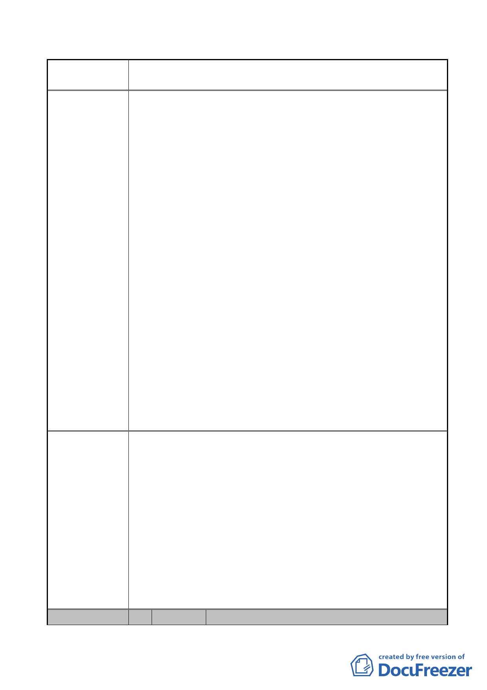

案名
委員會
決議
編號
變更臺北市內湖區石潭段四小段 280、281、281-1 地號等三筆
土地國中、國小用地為體育場用地及道路用地主要計畫案
里範圍內之國中小學區為三民國中、明湖國中、明湖國
小及新湖國小，該 2 所國中亦尚足以容納鄰近小學畢業
生。寶湖國中預定地學區與三民國中學區大量重疊，包
括新湖國小及潭美國小，該 2 所國小皆為小型學校，近
年來已陸續減班。依前揭評估分析結果及社會少子化因
素考量，寶湖國中無設校規劃需求。
（2）寶湖國小部分：依據臺北市內湖區戶政事務所統計資料，
寶湖國小學區範圍內未來五年學童就學人數統計為 71 至
99 人；另該區域範圍內雖有新建案，大部分於 101 年後
陸續完工，惟均為高級住宅，房價較高，推估五年內新
增適齡學童數約為 120 人。寶湖國小預定地鄰近之新湖
國小及麗湖國小目前均非額滿學校，且有減班趨勢，兩
校尚有足夠容量可供都市發展引進之學童就學。考量少
子化趨勢及鄰近學校尚能因應就學需求，爰寶湖國小無
設校需求。
2.體育場用地之規劃
本案體育場用地未來將以 OT 方式委外經營，相關設施使
用初步規劃如下：
（1）中央球場（主場館）及第一球場，同可提供約 5 千席次之
觀眾席，未來除了體育活動外，亦可舉辦藝文展演活動。
（2）戶外球場可提供民眾平日運動休閒使用，並可配合網球人
才培訓計畫，提供國內網球運動選手及一般民眾訓練場
地。
本案除以下幾點納入計畫書修正外，其餘依市府本次所送修正
後計畫書通過。
1.因本體育場用地使用所產生之交通需求將完全於計畫區內部
化處理，且民眾亦陳情對於 206 巷拓寬為 17 公尺後所引進車
流對居住安寧將造成影響的疑慮，因此，本案有關用地變更
部分，西側變更部分國中用地、國小用地為道路用地，原規
劃之計畫道路寬度 17 公尺，配合以南現有之計畫道路寬度調
整為 12 公尺。
2.有關都市設計部分，本案應於計畫區北側臨民權東路六段退
縮留設大客車臨時停車區。未來規劃設計應朝向公園化處
理，除必要設施外，應儘量提高綠覆率，並增加基地保水。
3.申請單位請修正為臺北市政府體育局。
2 陳情人 寶湖里辦公處 邱里長顯松
- 26 -